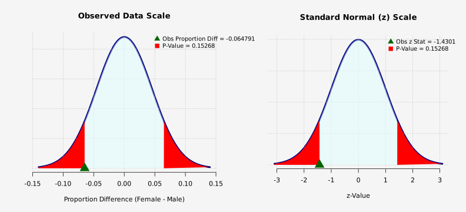
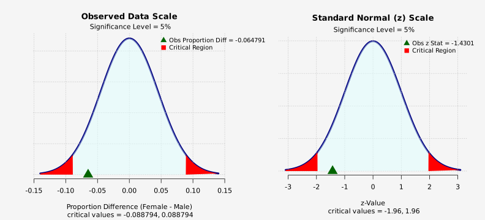

Data Summary
Counts: Legalize Marijuana by Sex
| - | Yes | No | Total |
|---|---|---|---|
| Female | 142 | 62 | 204 |
| Male | 140 | 44 | 184 |
Percentages: Legalize Marijuana by Sex
| - | Yes | No |
|---|---|---|
| Female | 69.60784 | 30.39216 |
| Male | 76.08696 | 23.91304 |
Two Population Proportion Test of Hypothesis
Method: Large Sample z Test (Pooled Standard Error)
Success = Yes
Population 1 = Female, Population 2 = Male
Sample Size: Female = 204, Male = 184
Number of Successes: Female = 142, Male = 140
Proportion of Success: Female = 0.6961, Male = 0.7609
Significance level = 5%
Alternative Hypothesis Ha: Proportion of 'Female - Male' is not equal to 0
| Proportion Female | Proportion Male | Difference | Std Error | Obs z Stat | 2.5% z-Lower Critical | 2.5% z-Upper Critical | P-Value | BFB |
|---|---|---|---|---|---|---|---|---|
| 0.696078 | 0.76087 | -0.0647911 | 0.0453041 | -1.43014 | -1.95996 | 1.95996 | 0.152677 | 1.28205 |
- Test is not significant at 5% level.
- Bayes Factor Bound (BFB): The data imply the odds in favor of
the alternative hypothesis is at most 1.282 to 1, relative to the null hypothesis.
the alternative hypothesis is at most 1.282 to 1, relative to the null hypothesis.
P-value Graph: Large Sample z, Pooled SE
Null density (in units of data): Normal; mean = 0 , sd = 0.045304
Alternative Hypothesis Ha: Proportion of 'Female - Male' is not equal to 0

Critical Region Graph: Large Sample z, Pooled SE
Null density (in units of data): Normal; mean = 0 , sd = 0.045304
Alternative Hypothesis Ha: Proportion of 'Female - Male' is not equal to 0
